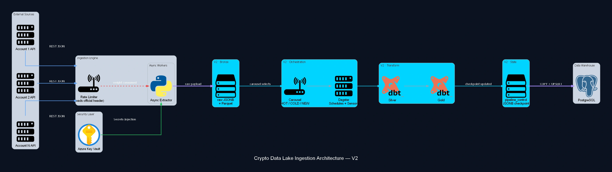

Enterprise Crypto Data Lake: Ingestão Multi-Conta
Dezenas de contas institucionais numa exchange de criptoativos, auditadas de forma contínua com >99,9% de uptime e backfill histórico completo desde a criação de cada uma. O núcleo é um rate limiter compartilhado entre processos que lê, em cada resposta HTTP, o header oficial de cota consumida (nunca uma estimativa por contagem de chamadas), o que elimina o padrão de bloqueio de IP que existia antes dessa arquitetura. Uma camada Bronze obrigatória guarda o payload bruto em JSONB e alimenta um modelo Medallion completo; a carga roda via COPY nativo do PostgreSQL, tabela temporária e UPSERT, sustentando dezenas de milhões de registros por ano com credenciais isoladas em Azure Key Vault.

Estudo de caso
Problema
Dezenas de contas institucionais e sub-contas numa mesma exchange precisavam de auditoria contínua, mas o teto de cota da API era compartilhado entre todas as chaves, não por chave, e cada sub-sistema (spot, futuros, conversão, staking) devolvia um formato de resposta diferente. Passar do limite bloqueava o IP corporativo por HTTP e travava a auditoria inteira até o desbloqueio.
Solução
Um rate limiter lê o header oficial de peso já consumido em cada resposta HTTP, nunca uma estimativa, com o estado compartilhado entre processos via memória gerenciada, respeitando um teto único de cota por minuto. Um carrossel dá prioridade às contas com atividade recente e empurra as inativas pra ciclos mais espaçados, sem gastar cota em quem não mudou. Toda a carga acontece em bulk, via COPY nativo, tabela temporária e UPSERT, com checkpoint em JSONB pra retomar exatamente de onde parou depois de qualquer interrupção.
Impacto
Backfill histórico completo desde a abertura de cada conta, algumas remontando a 2019, e fim do padrão de bloqueio que existia antes dessa arquitetura. Dezenas de milhões de registros processados por ano, com o pipeline sustentando >99,9% de uptime.
Tem um caso parecido? Vamos desenhar a arquitetura que prova o resultado no seu contexto.
Falar sobre seu caso